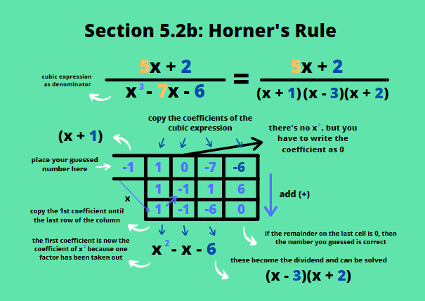
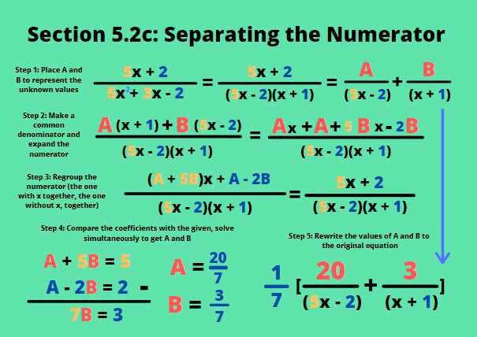

Partial fractions are special fractions that involve algebra in order to be solved. They usually involve adding several polynomials as both the numerator and denominator. Usually, common questions requires us students to break down a partial fraction into several fractions with integers as numerators. This meaning, they want us to separate the long fraction into several simpler fractions. this involves different methods which should be applied in solving the different variations of questions involving partial fractions. In this chapter, we are going to discuss the different cases for these questions and what approach we should use to solve each of them.
a. Factorising the Denominator
The first step to separating a partial fraction is to factorise the denominator. Separating the denominator is the first step to solving most partial fraction related questions. The denominators are usually a variation of quadratic or cubic expressions that can be factorised. For example, if you see x2 - 3x - 18, you'll have to simplify it into two factors. Two factors of -18 that adds up to -3 are -6 and 3, from which we get (x + 6)(x - 3) as the denominator. This is simple enough to factorise when the denominator is a quadratic expression, but what do we do if it's a cubic expression?
b. Horner's Rule
Horner's rule is a simple way of solving cubic expressions. Usually we have to 'guess' the factor of a cubic expression by inputting numbers that we think fit in the expression and would grant a result of 0 when substituted. You would still have to do that using Hoerner's rule, but this method only requires you to write down the coefficients of the cubic expression, and doesn't require you to manually divide the expressions after finding one factor. On the image on the right, you can see that there are grids. The top row indicates the coefficients of the cubic expression in the order of which coefficient has the highest degree of x. Note that if a degree of x is skipped, you would still have to write 0 to represent its coefficient in the grid, so that you can obtain the correct answer. Now the number on the upper left corner is the factor that is to be tested. The first coefficient will be copied to fill the column in which it is placed, multiply it with the factor, and place it on the spot below the second coefficient. Add the second coefficient with the number you just placed, and place the result in the cell directly below it. The result will be multiplied with the factor and placed under the third coefficient. Did you notice the pattern? Going down the grid, you add the numbers above, moving across the rows, you multiply the sum with the factor. To be sure that the number tested is the factor, the number on the bottom right corner has to be equal to 0, indicating that the remainder is 0. Once that number is 0, the numbers on the lowest column indicate your the coefficients of your remainder. The number on the first column represents the coefficient of x that is 1 less that it was before. This is because one factor has been taken out.
c. Separating the Numerator
Once the denominator has been factorised, the numerator can be separated, but we don't know what integer is going to be on top of each denominator. To solve this, we can place new variables to represent the unknown number. On the image on the right, an example can be seen. Now that we have letters to represent the unknown values, we solve them like solving any other fraction, make a common denominator and multiply the needed factors onto the numerators. What's left is to compare the coefficients of the numerator with that of the given sum of polynomials. For example, Ax2 + Bx2 = 3x2, then A + B = 3. You will get another equation from the coefficients of the other degrees of x. Solve this simultaneously, and you should get your answer. Re-write the values you found into the equation before, and you've successfully solved a partial fraction.
d. Special Cases
i. Numerator > Denominator
There are special cases in which the numerator is bigger than the denominator. In these cases, you should divide the numerator by the denominator first using the manual method. It should give you an integer, and a remainder that should serve as your new numerator. After doing so, you can apply the same steps to solve the fractional part of the equation, using the new numerator to be separated into integers. An example is provided on the image on the right.
ii. A Quadratic Factor Remains in the Denominator
In some cases, a cubic expression that is used as a denominator cannot be factorised fully into a linear form, sometimes it's still quadratic. In these cases, you should place an expression instead of just one variable to represent the unknown numerator. Numerators of fractions with quadratic expressions as denominators are usually linear expressions, and are commonly represented using Bx + C. Similar to before, solving A, B and C will give you the integer and linear expression to substitute into the separated fractions. If you have a common denominator (in the example, it's 1/5) you can 'take it out' or place it outside an additional set of brackets so that the fraction obtained is more simple.